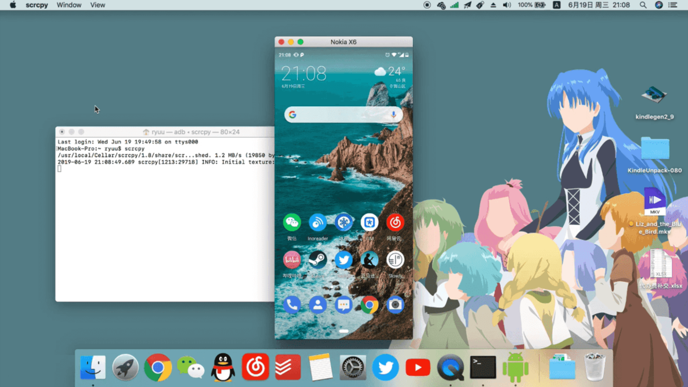
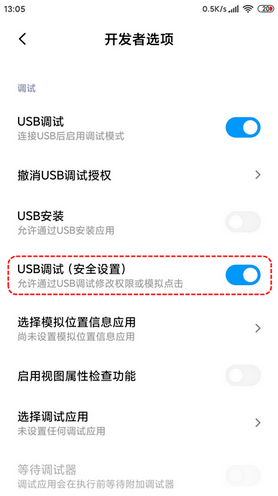
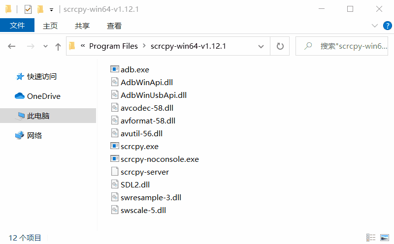
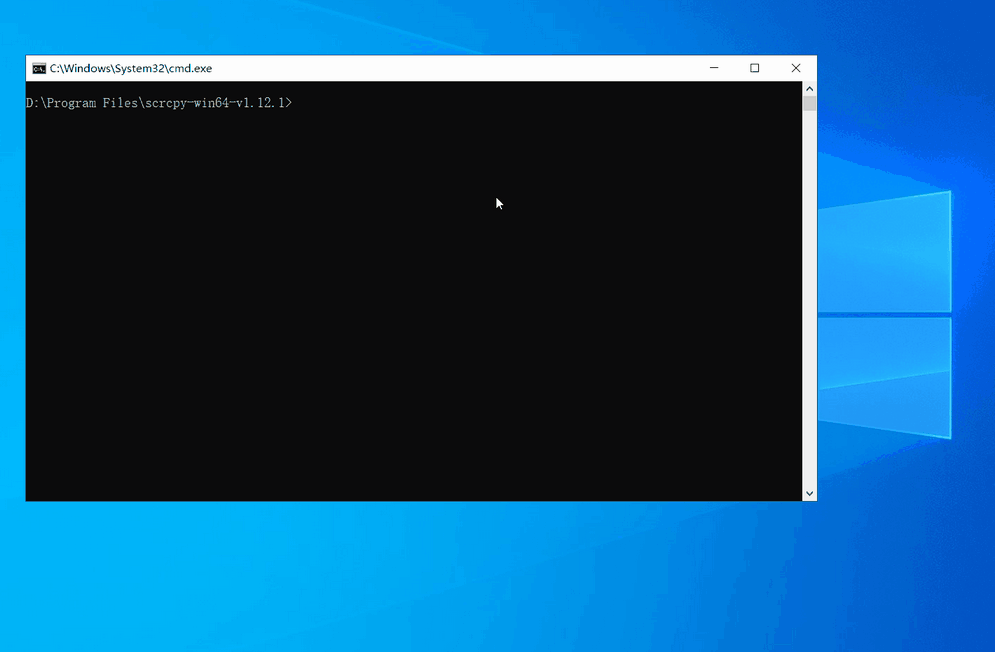
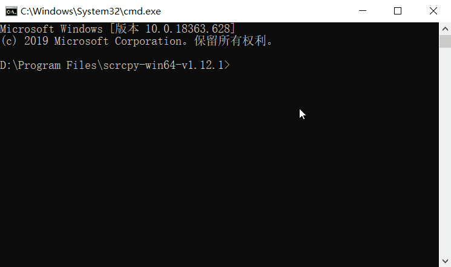
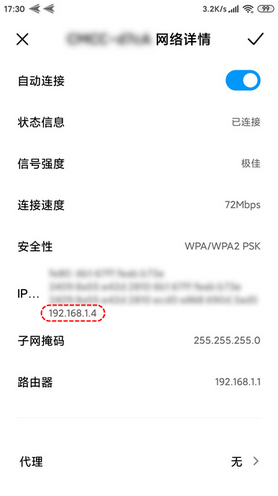
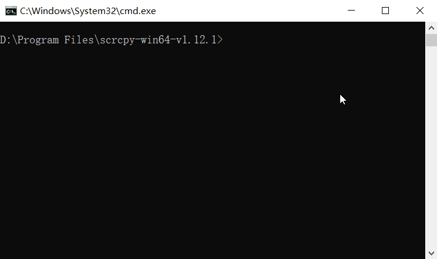

Scrcpy 可以将手机画面投射到电脑上，让你可以在电脑上对手机进行操控。Scrcpy 通过 USB 或 Wi-Fi 与安卓手机相连，不需要在手机上安装任何 app，也不需要取得 ROOT 权限。

✨ 亮点
- 轻量（原生，极简）
- 高性能（30~60fps）
- 高分辨率（1920×1080 或以上）
- 低延迟（35~70ms）
- 启动快（大约 1 秒就能得到画面）
- 绿色便携（不需要安装到手机上）
Scrcpy 是开源软件，源码托管在 GitHub 上，立即 前往 ⇱
👉 要求
Scrcpy 要依靠 ADB 才能工作。ADB，安卓调试桥，是电脑上专门用来和安卓手机交互的工具。使用 ADB，不需要在手机上安装额外的 app，但手机上必须启用调试模式。
- Android 5.0 以上版本
- 在连接 USB 后启用调试模式（设置 > 开发者选项 > USB 调试）
ADB 支持通过网络和手机建立连接（这正是 Scrcpy 支持无线投屏的原因），但大多数手机默认都禁止 ADB 通过网络与之连接，因此第一次使用 ADB，只能通过 USB 数据线连接。
打开 USB 调试后，第一次和电脑连接，会出现如下提示，点击确定。

有些手机还需要再打开一个关于调试模式的附加选项——USB 调试（安全设置），否则将无法在电脑上操控手机。
📦 下载软件包
对于 Windows 平台，官方提供了完整的软件包：
Scrcpy 的软件包是一个压缩包，里面包含了 Scrcpy 的主程序和所有需要用到的数据。用 解压缩工具 将它们解压出来即可使用。
Scrcpy 没有提供图形化的用户界面，要使用它，首先要在地址栏输入 cmd，然后回车，此时会弹出一个命令提示符窗口。下文介绍的所有命令都是要在命令提示符窗口中执行的，比如输入 scrcpy，然后按回车，即可启动 Scrcpy

🎯 基本用法
用 USB 数据线把手机和电脑连接起来后，执行命令 scrcpy 即可：

📡 无线投屏
ADB 支持通过网络和手机建立连接，因此 Scrcpy 也支持无线投屏。
但是大多数手机默认都没有启动相关的服务，导致 ADB 无法通过网络与之连接，因此在使用无线投屏之前，需要先把手机上的相关服务打开。打开的方式也很简单，在手机已经通过 USB 数据线连接到电脑的情况下，执行命令 adb tcpip 5555 即可。

现在就可以拔下 USB 数据线了！
通过网络连接的前提是，手机与电脑处在同一局域网中。ADB 需要根据手机的 IP 地址找到手机，为此需要先知道手机的 IP 地址（设置 > WLAN）

知道了手机的 IP 地址，就可以让 ADB 通过网络和手机建立连接了，只需执行命令 adb connect 手机的 IP 地址:5555 即可。

执行下面命令，可以查看已成功连接的手机。
1 | adb devices |
通过网络连接成功后，同样只要执行命令 scrcpy 就可以启动 Scrcpy
如果投屏已经结束，需要下面执行命令，让 ADB 断开和手机的连接。
1 | adb disconnect 手机的 IP 地址:5555 |
🎨 功能特性
在启动 Scrcpy 时，可以通过在命令 scrcpy 后面跟上一些选项和参数来改变一些功能特性。
捕获配置
减小尺寸
在投屏过程中，有时希望用较低的清晰度换取更高的性能。为此，可以使用 --max-size 选项设定一个最大尺寸，将宽度和高度限制为这个值以下，以 1024 为例：
1 | scrcpy --max-size 1024 |
Scrcpy 在对画面进行缩放时，会根据屏幕比例进行处理。也就是说，缩放后，比例不会改变，图像不会产生变形。例如 1920×1080，将被缩小到 1024×576，比例仍然是 16:9
更改比特率
比特率默认是 8 Mbps，可以使用 --bit-rate 选项重新设定， 以 2Mbps 为例：
1 | scrcpy --bit-rate 2M |
限制帧速率
Android 10 及以上可以对帧速率进行限制：
1 | scrcpy --max-fps 15 |
裁切画面
有时需要对画面进行裁切，以实现只对屏幕的部分区域进行投屏。比如在使用 VR 眼镜时。
1 | scrcpy --crop 1224:1440:0:0 # 1224x1440 at offset (0,0) |
注：前两位是指定裁切区域的大小，后两位指定裁切区域在整个屏幕中的位置。
如果同时还使用了 --max-size，会在裁切后再进行缩放。
录屏配置
可以边投屏，边录屏。
1 | scrcpy --record file.mp4 |
也可以只录屏，而不投屏。
1 | scrcpy --no-display --record file.mp4 |
连接配置
无线连接
在上文的「无线投屏」一节中已有详细介绍，这里不再赘述。
多部手机
如果同时连接了多部手机，执行 adb devices 可以看到 ADB 为每部手机分配了不同的字符串。
1 | adb devices |
这时要用 --serial 选项指出需要投屏的那一部。
1 | scrcpy --serial b3gsdf5f45ag |
通过网络连接的，则跟上它的网络地址。
1 | scrcpy --serial 192.168.0.1:5555 |
有多少部手机要进行投屏，就启动多少个投屏任务。
🏹 快捷键
在对手机进行操控时，可以使用下列快捷键。
| 作用 | 快捷键 |
|---|---|
| Home 键 | Ctrl + H |
| 返回键 | Ctrl + B 或右击 |
| 近期任务 | Ctrl + S |
| 展开通知栏 | Ctrl + N |
| 收起通知栏 | Ctrl + Shift + N |
| 菜单键 | Ctrl + M |
| 音量 + | Ctrl + ↑ |
| 音量 - | Ctrl + ↓ |
| 电源键 | Ctrl + P |
| 熄屏，但继续投屏 | Ctrl + O |
| 点亮屏幕 | 右击 |
| 传文件到手机 | 将文件拖拽到窗口 |
注：若屏幕是因为长时间无操作而熄灭，鼠标右键单击即可点亮；若是因为按了 Ctrl + O 而熄灭，先按一次 Ctrl + P，之后即可正常点亮。
Licence: CC BY-NC-ND 4.0